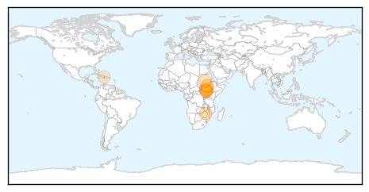
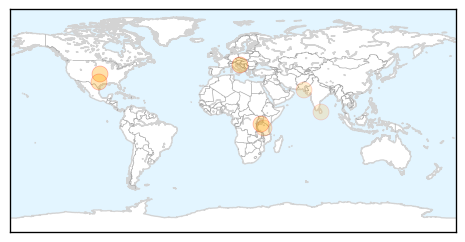

Cholera
30-Day Web Trend
3 alerts, 2 warnings

30-Day Twitter Trend
0 alerts, 0 warnings

Article Locations
Article Confidences

Top Articles:
- 0.999
- The most from the coast
- 0.999
- South Sudan: MSF rapidly scales up response to contain cholera outbreak
- 0.998
- UNICEF warns of worsening South Sudan cholera outbreak
- 0.997
- MSF rapidly scales up response to contain cholera outbreak - South Sudan
- 0.928
- UNICEF South Sudan Humanitarian Situation Report #23, Reporting Period 20 – 27 May 2014 - South Sudan
- 0.903
- Diarrhoea Hits Harare Suburbs - Zimbabwe
- 0.880
- Ireland to donate further €2m to South Sudan
- 0.574
- 2013 Mary Rines Thompson Award Winner
- 0.510
- Abyei’s Agok hospital runs out of medicines
Top Tweets:
-
No tweets found for May 23, 2014
Dengue Fever
30-Day Web Trend
0 alerts, 0 warnings

30-Day Twitter Trend
0 alerts, 0 warnings

Article Locations
Article Confidences

Top Articles:
- 0.993
- Costa Rica on alert for Chikungunya virus - Inside Costa Rica
- 0.962
- Threat of malaria and rat-bite fever
- 0.890
- Home
- 0.885
- Warmer weather expected to bring swarms of mosquitoes to East Te - KLTV.com-Tyler, Longview, Jacksonville, Texas
- 0.611
- Researchers Identify New Target of Malaria Vaccine
- 0.554
- Mosquito horrors: Dengue patient admitted to hospital
- 0.506
- Latest news on sustainable development, features, opinions, interviews with NGO leaders and multimedia from India and South Asia
Top Tweets:
-
No tweets found for May 23, 2014